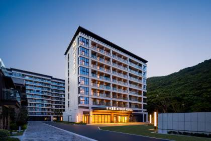

舟山
/
玩乐地
/
朱家尖大青山景区
朱家尖大青山景区
自驾环岛 · 里沙沙滩 · 山顶观海

朱家尖大青山景区
建议从携程/App查看最新实拍
大青山环海公路/沙滩实景 · 照片待补充
自驾环岛
里沙沙滩
四季花海
山顶观景
项目
详情
地址
浙江省舟山市普陀区朱家尖岛南端
门票
旺季成人 100；儿童 50；1.2m 以下/6 周岁以下免票
营业时间
07:30–17:00（16:15 停止售检票）
特点
可自驾进入，环岛公路风景极佳
里沙沙滩人少、沙细，适合孩子玩水
猫跳观景台看日落，出片率高
四季花海、草坪露营区
适合谁
自驾观景
沙滩玩水
注意：
旺季可能限流，建议上午进入。
景区内道路较窄，注意行车安全。
介绍
大青山是朱家尖的环岛精华，开车上山、下山到里沙沙滩，一站式满足爸爸看风景+孩子玩水的需求。